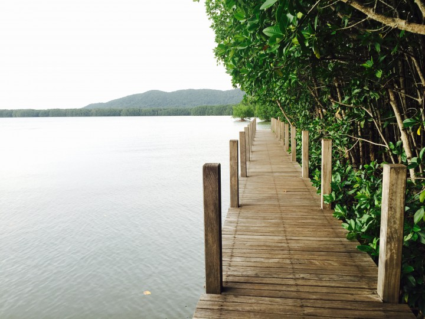
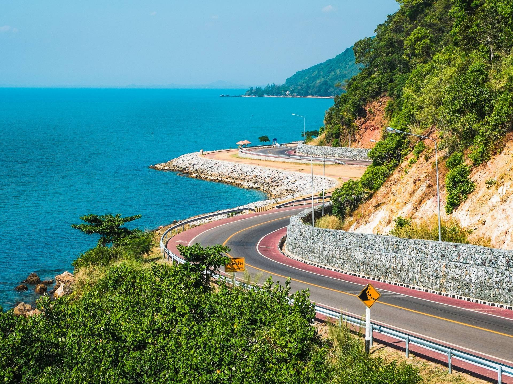
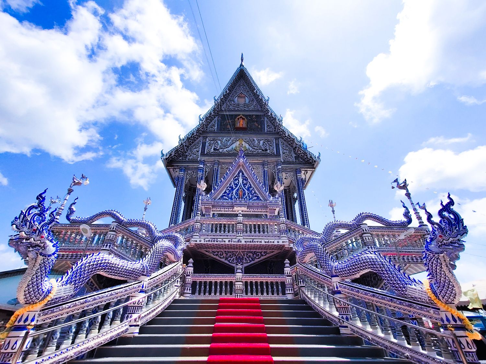
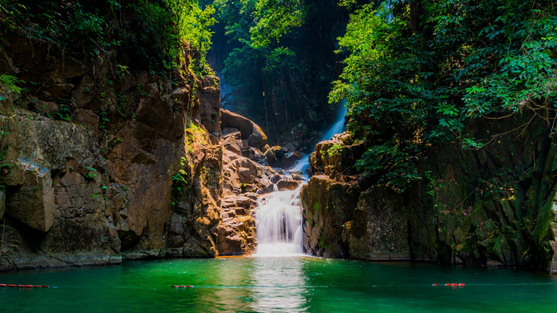
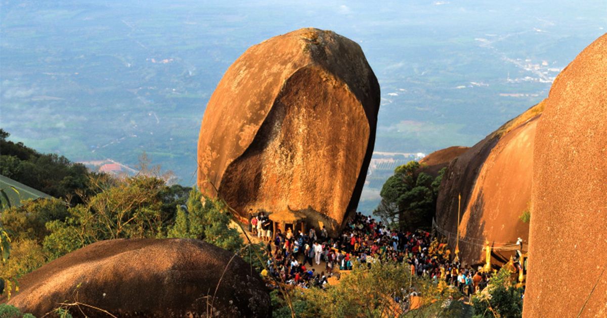
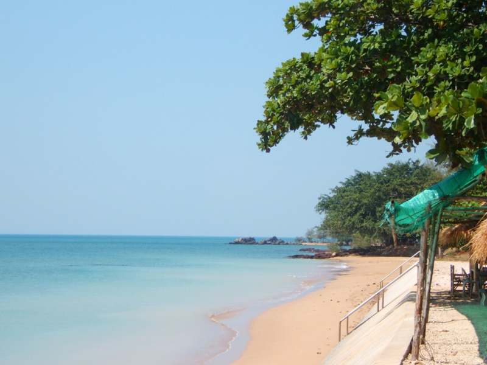
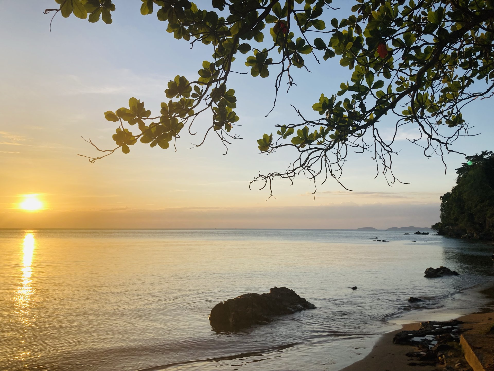
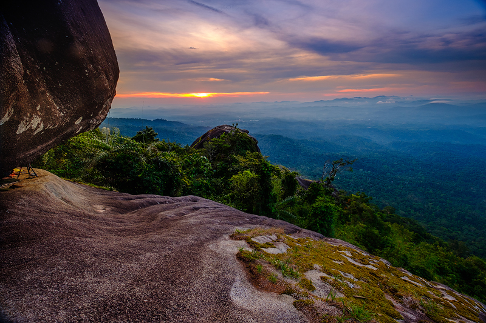
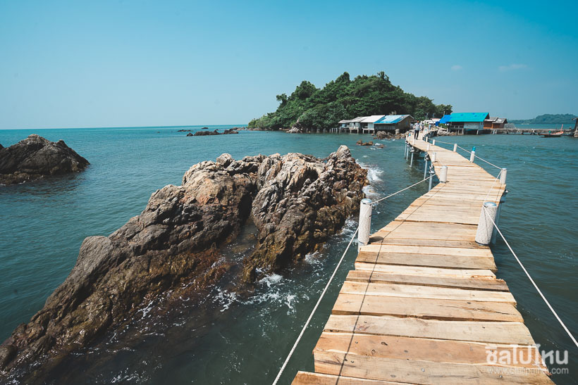

อ่าวคุ้งกระเบน
อ่าวคุ้งกระเบน หรือ ศูนย์ศึกษาการพัฒนาอ่าวคุ้งกระเบนอันเนื่องมาจากพระราชดำริ เป็นศูนย์เรียนรู้ที่มีกิจกรรมที่น่าสนใจหลายอย่าง ได้แก่ เส้นทางศึกษาธรรมชาติป่าชายเลน ชมพันธุ์ปลา สถานที่แสดงพันธุ์สัตว์น้ำเฉลิมพระเกียรติ 6 รอบ พระชนมพรรษา นักท่องเที่ยวสามารถมาให้อาหารฉลาม และเรียนรู้การเลี้ยงสัตว์น้ำทางทะเลที่หน่วยสาธิตการเลี้ยงสัตว์น้ำภายในอ่าวคุ้งกระเบน พร้อมเดินชมวิวสวยๆ ของป่าชายเลนได้ครับ ดูรีวิวได้ที่ : อ่าวคุ้งกระเบน ที่เที่ยวจันทบุรี เดินชิล ถ่ายรูปปัง ใกล้กรุงเทพ พิกัด : https://goo.gl/maps/3om9P1MUgLZvGrgJ6 ================================================================================ |
จุดชมวิวเนินนางพญา
จุดชมวิวเนินนางพญา เป็นหนึ่งใน Dream Destination ที่พลาดไม่ได้ในการมาเที่ยวจันทบุรี แน่นอนว่า นอกจากเราจะมาชมความงดงามของ ถนนเฉลิมบรูพาชลทิต ถนนเลียบชายฝั่งที่สวยที่สุดในภาคตะวันออก สัมผัสลมทะเล พร้อมวิวแบบพาโนรามาแล้ว ยังได้มุมสวยๆ ถ่ายรูปคู่กับถนนเลียบทะเล เหมือนอยู่เมืองนอกทีเดียว และบริเวณใกล้ๆ กันนั้นมีบริการที่พักและร้านอาหารทะเลเรียงรายตามข้างทางอีกด้วยครับ ดูรีวิวได้ที่ : จุดชมวิวเนินนางพญา ถนนเลียบทะเลยาวที่สุดในประเทศไทย สวยเหมือนเมืองนอก พิกัด : https://goo.gl/maps/R63pKDmxNcoN8S1H7 ================================================================================ |
วัดปากแขมหนู
มากันอีกหนึ่งวัดดังของจันทบุรีอย่าง “วัดปากน้ำแขมหนู” วัดเก่าแก่ที่ตั้งอยู่ในชุมชนประมง ริมทะเล ทำให้โบสถ์หลังเก่าชำรุด ทางวัดจึงทำโบสถ์สีน้ำเงินขึ้นมา ซึ่งโบสถ์นี้ทำมาจากกระเบื้องโดยเทคนิคงานเซรามิกโบราณที่ใช้สีพื้นเพียงสองสี ทำให้โบสถ์สีน้ำเงินนี้ออกมาคลาสสิกสวยงามแปลกตาจนกลายเป็นอีกหนึ่งจุดเช็กอินที่ไม่ควรพลาด ดูรีวิวได้ที่ : วัดสวยจันทบุรี วัดปากน้ำแขมหนู โบสถ์สีน้ำเงินขาว เที่ยวจันท์ สุด Unseen พิกัด : https://goo.gl/maps/imZW46D6sfUbZFDN9 ================================================================================ |
น้ำตกพลิ้ว
น้ำตกพลิ้ว ตั้งอยู่ใน อุทยานแห่งชาติน้ำตกพลิ้ว เป็นน้ำตกขนาดกลาง ที่มีน้ำใสไหลเย็นตลอดปีท่ามกลางป่าไม้อันอุดมสมบูรณ์ สามารถลงเล่นน้ำได้จึงเป็นที่นิยมของนักท่องเที่ยวมากๆ ค่ะ ที่นี่มีปลาพลวงอาศัยอยู่เป็นจำนวนมาก เป็นที่ตื่นตาตื่นใจของนักท่องเที่ยวมากๆครับ ดูรีวิวได้ที่ : น้ำตกพลิ้ว ตามรอยเสด็จ ร.5 สักการะอลงกรณ์เจดีย์ และพีระมิดพระนางเรือล่ม พิกัด : https://goo.gl/maps/4N3PFoUTMmt9Aqg78 ================================================================================ |
เขาคิชฌกูฎ
เขาคิชฌกูฏ เป็นอีกหนึ่งที่เที่ยวสายบุญ ซึ่งจะมี งานนมัสการรอยพระบาทเขาคิชฌกูฏ จัดขึ้นเป็นประจำทุกๆ ปีในช่วงเดือนมกราคม-มีนาคม แต่ละปีจะมีพุทธศาสนิกชนจำนวนมากเดินทางมาเพื่อแสวงบุญด้วยความศรัทธาทั้งกลางวัน และกลางคืน ดูรีวิวได้ที่ : เขาคิชฌกูฏ จันทบุรี เปิดตำนานรอยพระพุทธบาท กับทริปสายบุญ พิกัด : https://goo.gl/maps/mASeMk2yu1yeAkeL8 ================================================================================ |
หาดคุ้งวิมาน
หาดคุ้งวิมาน เป็นอีกที่เที่ยวที่เหมาะมากๆ สำหรับมาชิลในทริปสั้นๆ หรือวันหยุดเสาร์-อาทิตย์นี้ได้เลยค่ะ บรรยากาศที่นี่ค่อนข้างเงียบสงบ และมีวิวทิวทัศน์ที่สวยงาม ริมหาดจะมีร้านค้า ร้านอาหารให้บริการนักท่องเที่ยวมากมายค่ะ เราจะได้อร่อยกับซีฟู้ดสดๆ รสชาติดี อีกทั้งถนนเลียบหาดคุ้งวิมานที่เชื่อมไปยัง จุดชมวิวเนินพญา ก็เป็นถนนที่ได้ชื่อว่าสวยงามที่สุดในภาคตะวันออกอีกด้วย ดูรีวิวได้ที่ : หาดคุ้งวิมาน ที่เที่ยวจันทบุรี ตากลม ชมทะเล พิกัด : https://goo.gl/maps/BRn8gEmPuSv8oBDn7 ================================================================================ |
อาสนวิหารพระนางมารีอาปฏิสนธินิรมลอาสนวิหารพระนางมารีอาปฏิสนธินิรมล โบสถ์คริสต์ จันทบุรี ที่ใหญ่ที่สุดในประเทศไทย มีอายุกว่า 100 ปีเลยทีเดียวค่ะ ที่นี่มีลักษณะเป็นสถาปัตยกรรมตะวันตกแบบโกธิก ประดับกระจกสีสแตนกลาสรูปนักบุญ รอบโบสถ์ ภายในมีรูปปั้นพระแม่มารีอาประดับพลอยที่เกิดจากการบริจาคด้วยความศรัทธาของประชาชน เป็นโบสถ์สวยที่ตั้งอยู่ใกล้กับชุมชนจันทบูร และเป็นสถานที่ที่นักท่องเที่ยวมักมาเยี่ยมชม และถ่ายรูปสวยๆ กลับไปเป็นที่ระลึกอีกด้วย ดูรีวิวได้ที่ : ชมความโกธิค โบสถ์คาธอริก จันทบุรี โบสถ์วัดแม่พระปฏิสนธินิรมล พิกัด : https://goo.gl/maps/MQqkyLX1VHBdMWuS8 ================================================================================ |
หาดแหลมสิงห์
หาดแหลมสิงห์ เป็นชายหาดบรรยากาศสงบ ท่ามกลางวิถีชีวิตชาวประมงปากน้ำแหลมสิงห์ บริเวณใกล้เคียงยังมีสถานที่ท่องเที่ยวน่าสนใจหลายแห่ง เช่น ตึกแดง และคุกขี้ไก่ ที่สร้างขึ้นในสมัย ร.5 เมื่อครั้งที่ฝรั่งเศสยึดจันทบุรี และยังมี ป้อมไพรีพินาศ ที่สร้างขึ้นสมัย ร.3 ครับ ดูรีวิวได้ที่ : หาดแหลมสิงหื จันทบุรี พิกัด : https://www.google.com/maps/place/หาดแหลมสิงห์ ================================================================================ |
ผาหินกูบ
ตามเราไป Unseen เที่ยวจันทบุรี กันที่ ผาหินกูบ เขตรักษาพันธุ์สัตว์ป่าเขาสอยดาว 1 ใน 10 เส้นทางเดินป่า ที่ทำให้เราไปแตะขอบฟ้าในเมืองไทยได้ใกล้แค่เอื้อมค่ะ ที่นี่เป็นเส้นทางการเดินป่า ในระยะทางประมาณ 6-7 กิโลเมตร สำหรับการที่จะขึ้นไปยังผาหินกูบได้นั้น ต้องมีเจ้าหน้าที่นำทางเท่านั้นค่ะ และต้องจองล่วงหน้า เพราะผาหินกูบ จะเปิดให้ขึ้นเฉพาะวันเสาร์ และอาทิตย์เท่านั้น ดูรีวิวได้ที่ : ผาหินกูบ จันทบุรี เดินป่า ขึ้นเขา เข้าไปให้ใกล้ฟ้ากว่าเดิม พิกัด : https://goo.gl/maps/t45GpQUV4Yp6kMzL7 ================================================================================ |
จุดชมวิวเจดีย์บ้านหัวแหลม
จุดชมวิวเจดีย์บ้านหัวแหลม ตั้งอยู่ใกล้ๆ กับ ท่าเทียบเรือประมงของบ้านหัวแหลม เจดีย์บ้านหัวแหลม นี้เป็นเจดีย์สีขาวเก่าแก่ ที่ตั้งอยู่บนโขดหินกลางทะเลสวยงามมากค่ะ มีอายุราว 200 ปีทีเดียว โดยจะมีสะพานไม้ยื่นยาวออกไปในทะเล เป็นทางเดินเพื่อให้เราไปสักการะองค์เจดีย์ได้ค่ะ ดูรีวิวได้ที่ : จุดชมวิวเจดีย์บ้านหัวแหลม ที่เที่ยวจันทบุรี ชมวิวพระอาทิตย์ตก พิกัด : https://goo.gl/maps/eWvbRgvQL8Vp483S7 ================================================================================ |
Follow me